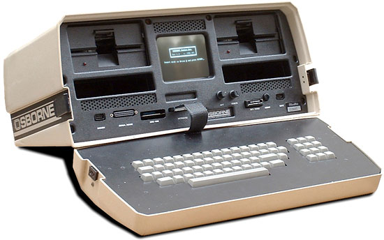

|  |
| June 1981 the Osborne 1 is considered to be the first portable computer |
Engineers also worked to decrease the size of the computers. In 1960, Digital Equipment Corporation released the first minicomputer, the PDP 1. And in 1964, the first desktop computer, the Programma 101, was unveiled to the public at the New York World's Fair. It was invented by Pier Giorgio Perotto and made by Olivetti. In 1968, Hewlett Packard began marketing the HP 9100A, considered to be the first mass-marketed desktop computer. The first workstation is considered to be the Xerox Alto, brought in 1974. However it was never sold. The computer was revolutionary for its time and contained a completely functional computer, display, and mouse. The computer conducted like many computers today utilizing windows, menus and icons as an interface to its operating system. Many of the computer's capabilities were first showed in The Mother of All Demos by Douglas Engelbart in 1968. Intel introduced the first microprocessor, the Intel 4004 in 1971. Andre Truong Trong Thi, along with Francois Gernelle, developed the Micral computer in 1973. Considered as the first "micro-computer", it used the Intel 8008 processor and was the first commercial non-assembly computer. Ed Roberts created the term "personal computer" when he introduced the Altair 8800 In 1975. Although the first personal computer is considered by many to be the KENBAK-1, which was first introduced in 1971. The computer relied on a series of switches for inputting data and output data by turning on and off a series of lights.
The IBM 5100 is the first portable computer, which was released in 1975. The computer weighed 55 pounds and had a five inch CRT display,1.9 MHz PALM processor, tape drive and 64 KB of RAM. The first portable computer or laptop is considered to be the Osborne I, which was released in 1981 and developed by Adam Osborne. The Osborne I had a 5-inch display, weighed 24.5 pounds, 64 KB of memory, two 5 1/4" floppy drives, ran the Cp/M2.2 operating system and included a modem. PC Division (PCD) later released the IBM portable in 1984, its first portable computer that weighed in at 30 pounds. Later in 1986, IBM PCD announced it's first laptop computer, the PC Convertible, weighing 12 pounds. Finally, in 1994, IBM introduced the IBM ThinkPad 775CD, the first notebook with an joined CD-ROM. The Apple 1 was the first Apple computer. The computer kit was developed by Steve Wozniak in 1976 and included a 6502 8-bit processor and 4 kb of memory, which was extendible to 8 or 48 kb using expansion cards. Although the Apple I had a fully assembled circuit board the kit still required a power supply, display, keyboard, and case to be operational. IBM introduced its first personal computer called the IBM PC in 1981. The computer was code named and still sometimes referred to as the Acorn and had a 8088 processor, 16 KB of memory, which was expandable to 256 and utilized MS-DOS. The first PC clone is the Compaq Portable. It was released in 1983 by Compaq. The Compaq Portable was 100% compatible with IBM computers and was capable of running any software developed for IBM computers. In 1992, Tandy Radio Shack became the first company to release a computer based on the MPC standards. This computer is considered to be the first multimedia computer.
| The first PC clone is the Compaq Portable |
Google inc. was established in 1998. It is one of the most known companies in the wold and millions of people use the Google search engine on the wold wide web. Along with Gmail and Google Maps services etc. Google also owns Youtube and Internet based video sharing system. The expanding technology is challenging socially with raises new legal issues. Such as privacy rights and intellectual property rights etc.
One of the most prominent computer innovations of today is the smartphones and its applications. Today smartphones are advancing in performance as computer miniaturization progresses.
Today, technology has developed at a vigorous rate and continues to do so as new models of computers are released to the market by companies everyday. Computers have become an inseparable part of our lives as they regulate factories, hospitals and any system imaginable. Computers continue to assist scientific researches and discoveries and are a tool that propels mankind to better life standards. Novel concepts such as Artificial intelligence are still in development stage and will have a tremendous affect in how we live our lives. This is only the beginning of what computer technology will evolve into.